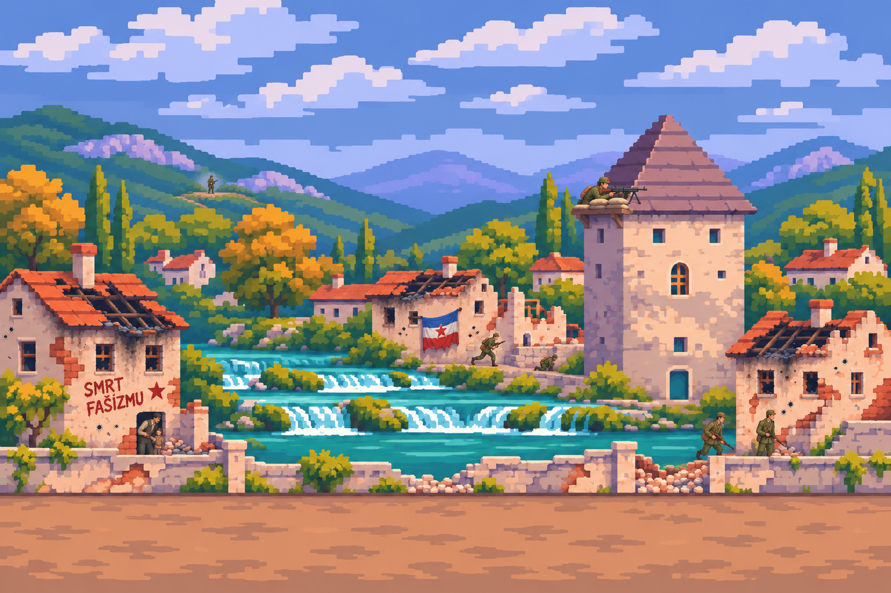
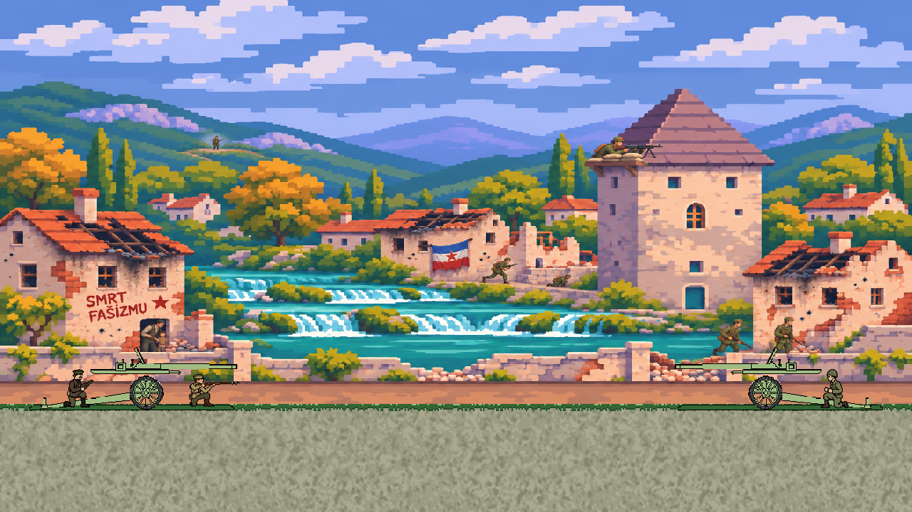

B2 · ratni tragovi


Razrada scene sa mitraljeskim mestom na kuli, patrolom, civilima u zaklonu i borcima u pokretu. Ovo je predlog rasporeda i poza; ljudi na slici još nisu animirani.


Sve stilske probe · Prethodna dorada atmosfere · Promptovi i izvori · imagegen